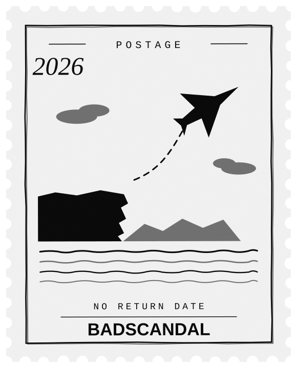
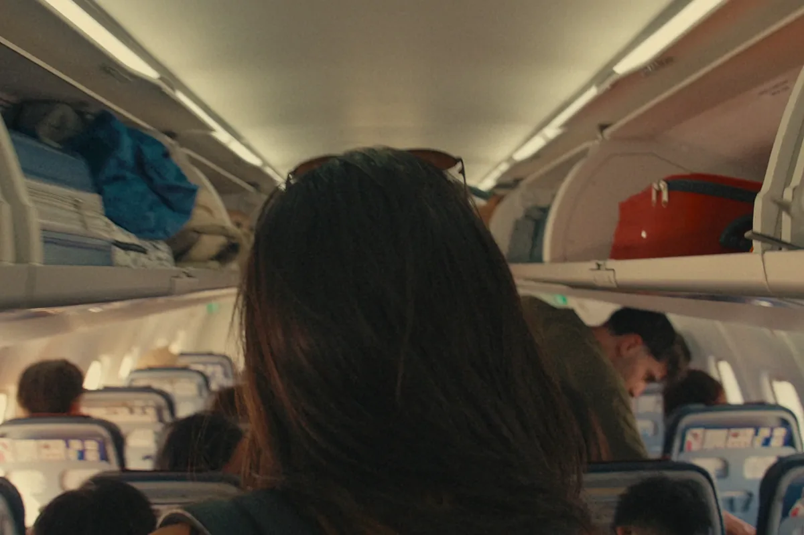
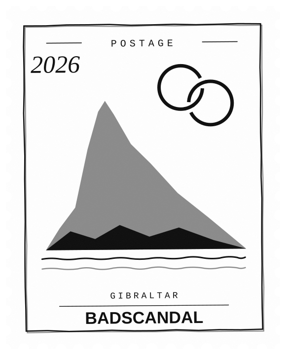
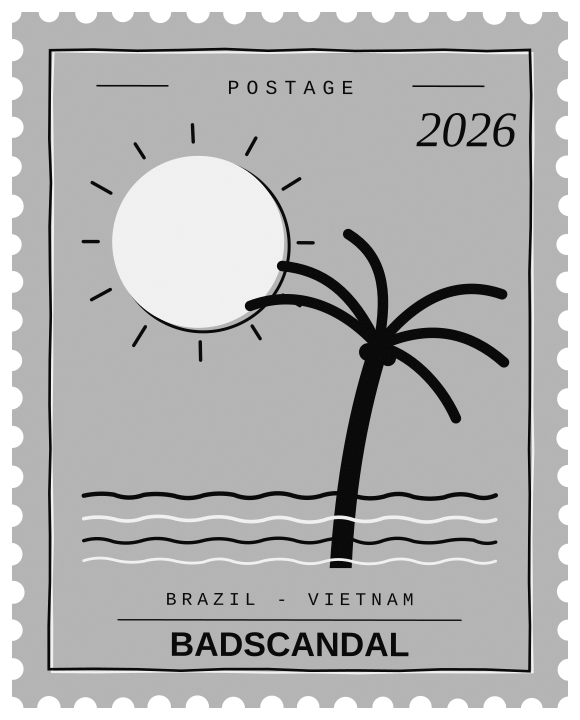

Ireland → out · one-way
Left the whole plan.
Country, family, the pension talk — all of it. Everyone said too fast, too crazy, too much. They were still saying it when the plane took off.
Luke & Lilian
Country, family, friends, the whole set-up — traded for a dream of making things and seeing the world. BADSCANDAL is the clothing that came out of it.
The story
We met and fell for each other embarrassingly fast, and somewhere in the middle of that we worked out we wanted the same unreasonable thing: to go, and to make things about going. So we left. Not on a gap year, not with a return date — properly left, with everyone we love watching and quietly forming an opinion about it.
Everybody had something to say. Too fast. Too crazy. Too soon. What about a real job, what about a pension, what about when it doesn't work. Some of it was concern and some of it was just the sound people make when you do something they didn't think they were allowed to do.
Here is the thing that made the decision easy. You get about four thousand weeks. If you're thirty, roughly fifteen hundred of them are already spent. Nobody brings this up, because a person who has done that arithmetic is much harder to keep in line.
And none of the opinions survive. Nobody studies Shakespeare's private life — a handful of academics, and even they clock off. The plays outlived the man; the gossip didn't make it out of the century. Whatever anyone thinks about how you're living will be gone just as completely, and much sooner. That's not bleak. That's the permission slip.
Society isn't built to get you where you want to go. It's built to keep things running smoothly, which is a different objective that happens to require you staying put. Work, rent, repeat — a loop with a door in it that most people never walk through. And if you're not breaking the law, there was never a problem. There was only a room full of people who'd decided there was.
BADSCANDAL is about becoming one. A bad scandal is what they call you when you stop asking permission. We started the brand as a statement to ourselves that we were actually doing this — and then it turned out other people wanted to say it too.
So: follow us around the world. Watch it work or watch it fall over. Either way it'll be worth looking at.
The road so far


Ireland → out · one-way
Country, family, the pension talk — all of it. Everyone said too fast, too crazy, too much. They were still saying it when the plane took off.

Gibraltar · two witnesses
No venue, no seating chart, no speech from an uncle. A registry office on a limestone rock and the two of us grinning like we'd got away with something. We had.

Brazil → Vietnam · no return date
Her family's side of the world, then the far side of it. We make things as we go, the clothes travel with us — and the opinions everyone had get very quiet from this far away.
Why
That's it. That's the whole allocation, and a good chunk of yours is already gone. Nobody mentions this, because a person who has done the arithmetic is much harder to keep in line.
So we left — country, family, friends, the sensible version of the plan. This is the clothing that came out of it: for chasing the thing you actually want, out loud, in front of everybody.
The arithmetic
Weeks in an average life. That's the entire allocation — not per decade, not per chapter. The whole thing.
Already gone by thirty. Nobody mentions this, and it is the single most useful number we know.
The club
Membership is simple: wear it, mean it, and stop apologising for taking up space.
Take me to the storeHow it goes
Every piece starts as something one of us actually said out loud and then thought better of. Those are the good ones. If it doesn't make us slightly nervous, it doesn't get printed.
Heavyweight cotton, printed big enough to read from across the road. Most of the statements live across the back, because that's the side of you people are looking at when you walk away.
Somebody reads it, somebody has an opinion about it, and that's the entire point. Then we go again.
Being the bad scandal. Anarchy of the personal kind — expressing yourself freely and being yourself, whatever that means for you. Not a puppet, not a people-pleaser, not a version of yourself built for someone else's comfort.
Luke and Lilian. We left our country to chase making things and seeing the world, and started a clothing brand as a statement to ourselves that we were actually doing it. You're on the story page — it's all above you.
Statements have something to say across them — that's the loud half of the wardrobe. Essentials are the blanks and basics you build the rest of the outfit from. Both are in the store.
We don't care — we're here to express. If everything you make is safe for everyone, it says nothing to anyone. If you're not breaking the law, there's no problem.
Worldwide. Prices are in euro, and everything is made to order — so give it a little longer than you'd give a warehouse.
Follow us
Lately
Wear it
The clothes are the statement — the loud half of it across the back, where people read it as you walk away. Say the thing nobody says, or just take the plain one and mean it quietly.